lorenz_partial_25d_additive_mse_uniform_obsnoise005__lc_sweepProject: Lorenz_INDpartial_N25_D1_NormTrue_T3__JacobianODE
Launched: 2026-04-16T05:55:37Z
Completed: 2026-04-16T10:50:15Z
Outcome: complete_clean
Git: latent-JacobianODE @ 4b6bc1f
Expected runs: 9
lorenz_partial_25d_additive_mse_uniformDescription
Partial-obs Lorenz, x-coordinate only, n_delays=25, z_dyn=3. Plain MSE, additive coupling. reconstruction_mode='uniform' — training loss (decoded prediction + reconstruction) scored on the full 25-D delay-embedded state. Validation monitor automatically uses 'most_recent' (see validation_step), so checkpoint selection is unchanged. kl_null_weight still 0. obs_noise_scale 0. LC weight swept.
Hypothesis
The sufficient-statistic hypothesis for partial-obs: the encoder has no incentive to surface trajectory history into z_dyn when training loss only requires reconstructing the current frame. Training on the full delay-embedded state should force z_dyn to encode a more complete summary of the window — because reconstructing older lags directly constrains what information the encoder maps where. Expected: better Lyapunov spectrum recovery and val/trajectory_r2 on the live-frame monitor than the most_recent-trained partial_25d_mse sweep, with similar or lower LC optima. If this moves the needle, partial-obs training should default to uniform going forward; if it doesn't, n_delays or kl_null is the real bottleneck.
Success criteria
Swept axes (1): training.lightning.loop_closure_weight
Chosen run (by best_traj_loss): vvknnlwr — traj_loss=0.00481, MASE=0.7642, R²=0.9868, LC loss=11.129, epoch=87.0
Swept-axis values at chosen run: training.lightning.loop_closure_weight=1.0e-06
Runs analyzed: 9 (expected 9)
| run_idx | run_id | training.lightning.loop_closure_weight |
best_traj_loss | best_MASE | R² | LC loss | epoch |
|---|---|---|---|---|---|---|---|
| 1 | vvknnlwr |
1.0e-06 | 0.00481 | 0.7642 | 0.9868 | 11.129 | 87.0 |
| 2 | i1b7mm9c |
1.0e-05 | 0.00488 | 0.7703 | 0.9866 | 1.749 | 100.0 |
| 0 | xilcvbjr |
0 | 0.00497 | 0.7701 | 0.9864 | 69.057 | 132.0 |
| 3 | ggfm33v9 |
1.0e-04 | 0.00517 | 0.7862 | 0.9858 | 0.257 | 79.0 |
| 5 | a8d9c9ad |
0.01 | 0.00532 | 0.7952 | 0.9853 | 0.001 | 159.0 |
| 4 | tt7gknm5 |
0.001 | 0.00538 | 0.7970 | 0.9852 | 0.015 | 81.0 |
| 6 | w3fh36ic |
0.1 | 0.00591 | 0.8363 | 0.9837 | 0.000 | 98.0 |
| 7 | icynffax |
1 | 0.00667 | 0.8893 | 0.9816 | 0.000 | 86.0 |
| 8 | solx3w1m |
10 | 0.00703 | 0.9153 | 0.9806 | 0.000 | 114.0 |
| Criterion | Verdict | Note |
|---|---|---|
| Best run's leading Lyapunov exponent > 0 | Unknown | |
| Best run's predicted Lyapunov spectrum within ~30% of empirical | Unknown | |
| val/trajectory_r2 at best-LC improves over partial_25d_mse most_recent baseline | Unknown | |
| No blow-up of loop closure during training (uniform loss doesn't break the encoder-decoder cycle) | Unknown |
Automated verdicts use simple numeric-threshold parsing and may mis-classify qualitative criteria. The Discussion section below takes precedence.
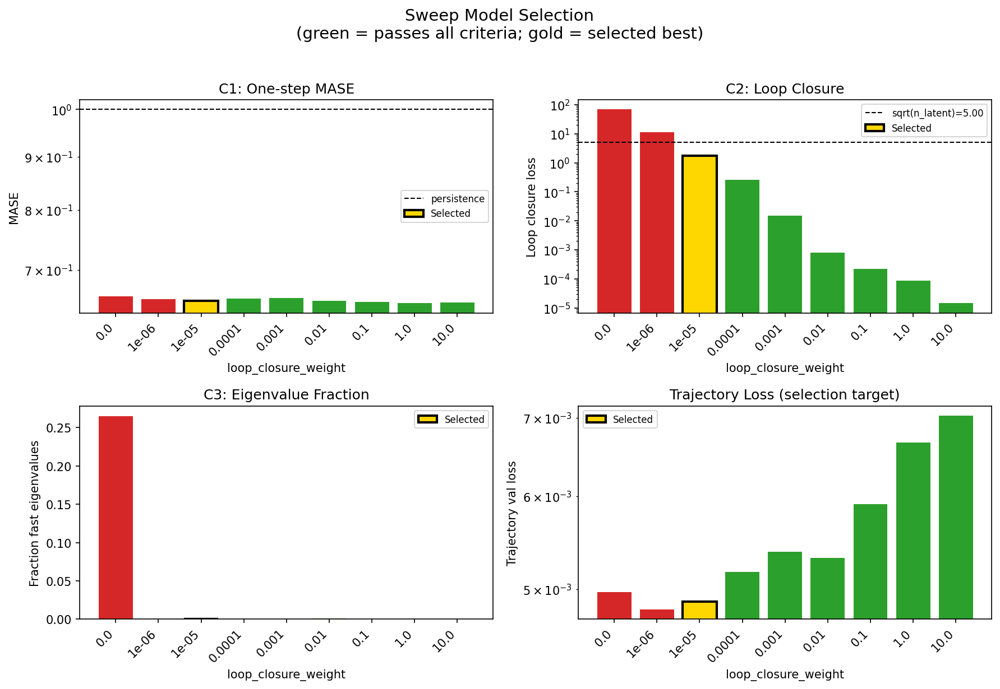
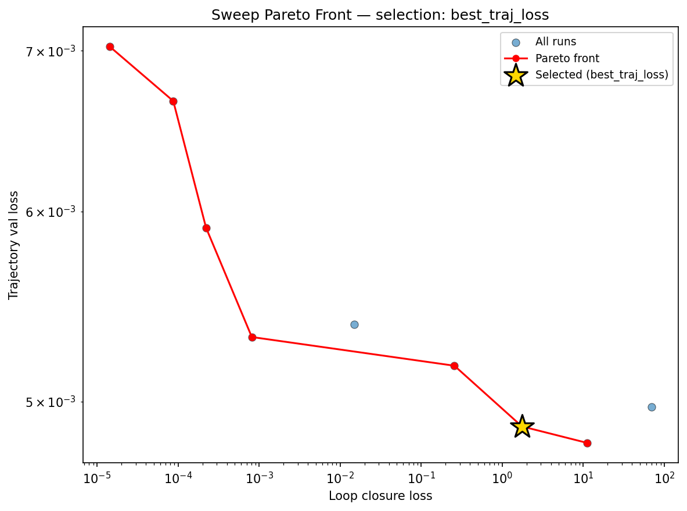
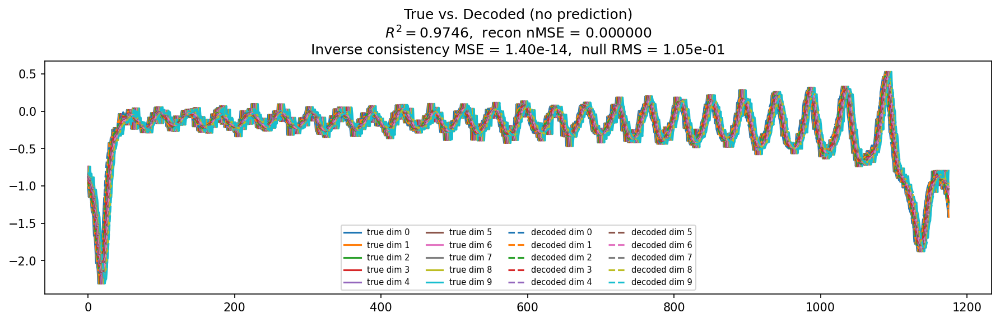
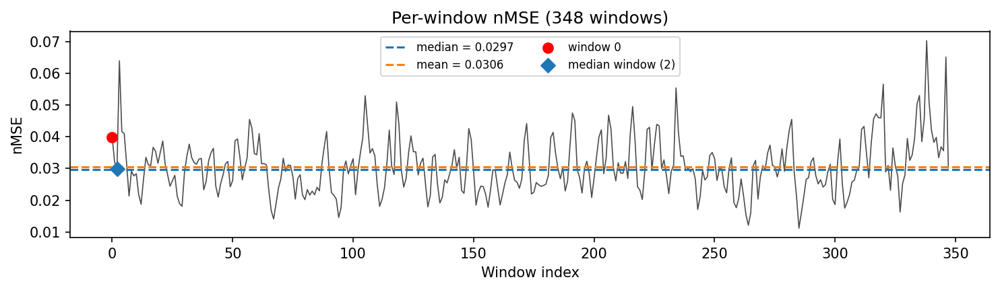
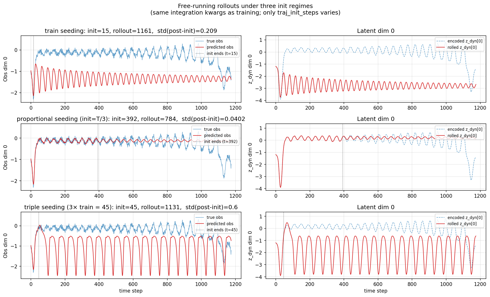
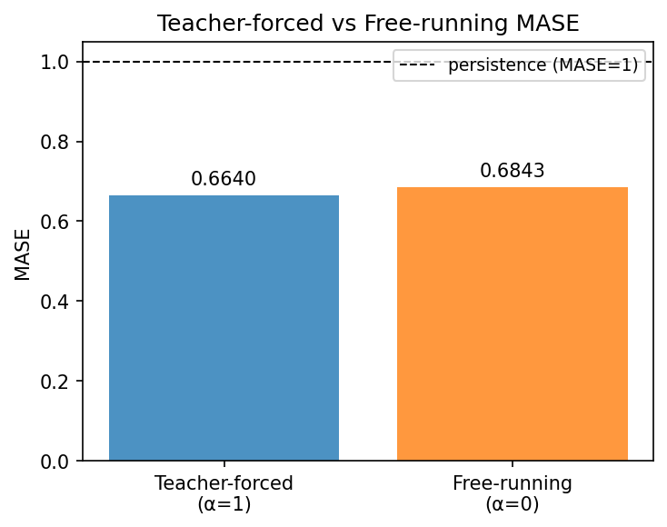
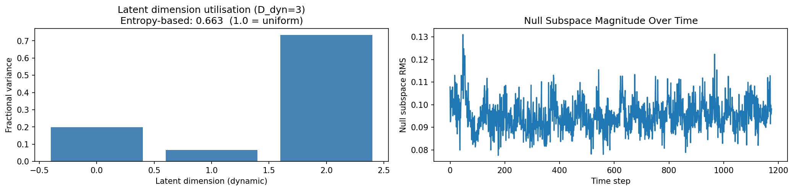
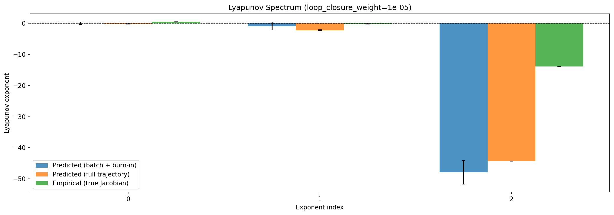
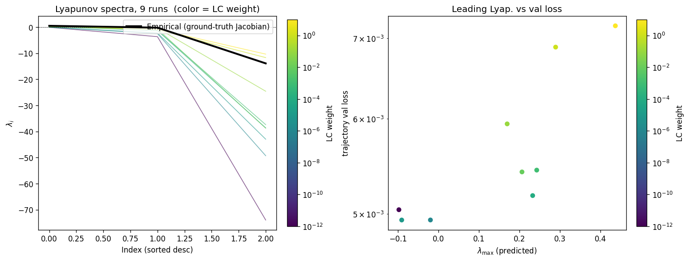
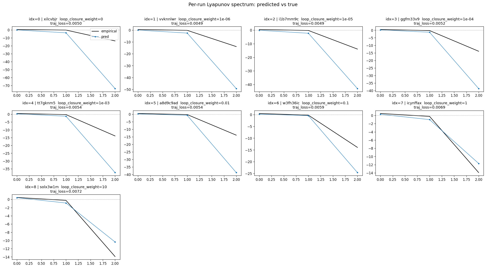
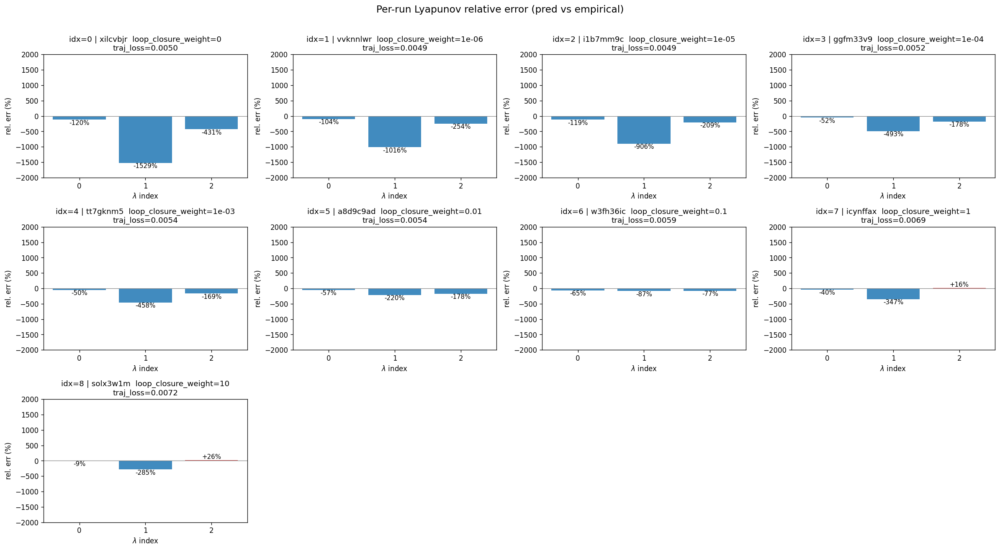
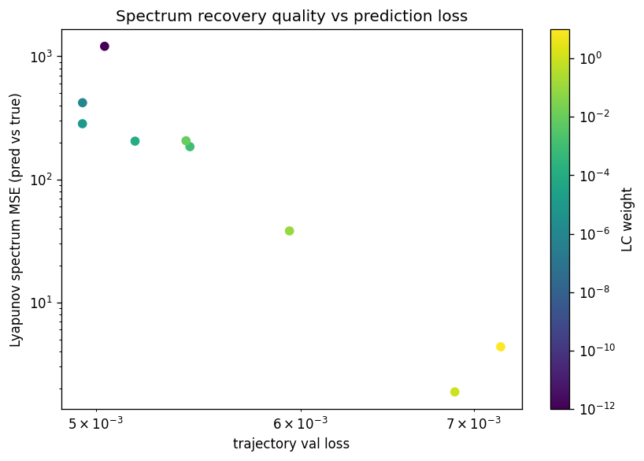
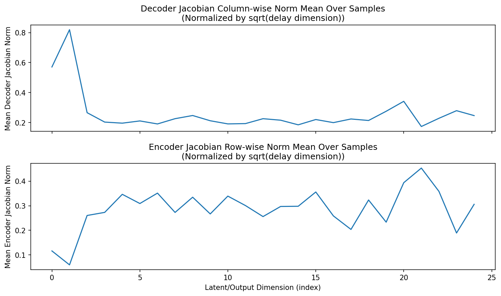
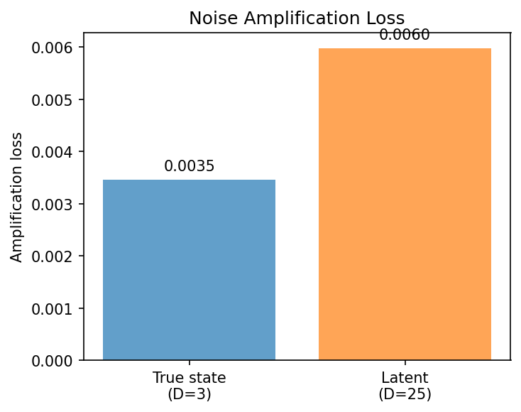
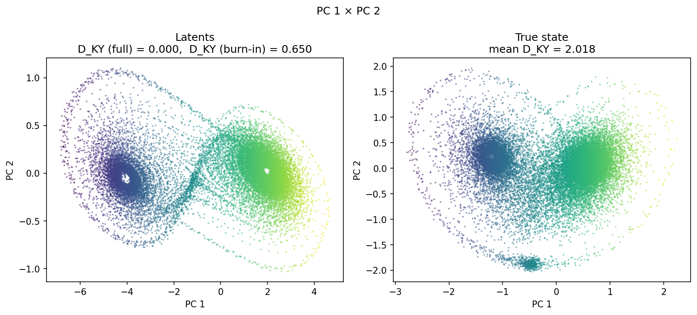
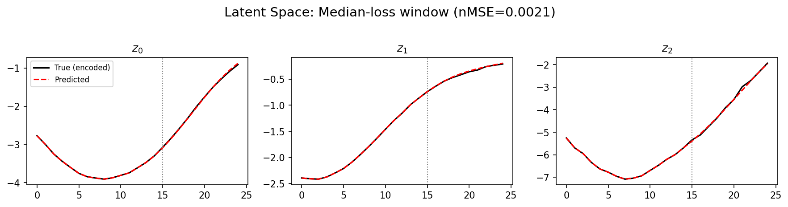
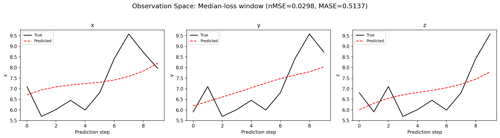
(to be written)
run_analytics stdoutrun_analyticsNo run_id provided — selecting best run from group 'lorenz_partial_25d_additive_mse_uniform_obsnoise005__lc_sweep' ...
Found 9 total runs in JacobianODE/Lorenz_INDpartial_N25_D1_NormTrue_T3__JacobianODE (group=lorenz_partial_25d_additive_mse_uniform_obsnoise005__lc_sweep)
All runs (state, loop_closure_weight, tangent_entropy_weight, kl_dyn_weight):
xilcvbjr: state=finished, lc=0.0, te=0.0, kl_dyn=0.0
vvknnlwr: state=finished, lc=1e-06, te=0.0, kl_dyn=0.0
i1b7mm9c: state=finished, lc=1e-05, te=0.0, kl_dyn=0.0
ggfm33v9: state=finished, lc=0.0001, te=0.0, kl_dyn=0.0
tt7gknm5: state=finished, lc=0.001, te=0.0, kl_dyn=0.0
a8d9c9ad: state=finished, lc=0.01, te=0.0, kl_dyn=0.0
w3fh36ic: state=finished, lc=0.1, te=0.0, kl_dyn=0.0
icynffax: state=finished, lc=1.0, te=0.0, kl_dyn=0.0
solx3w1m: state=finished, lc=10.0, te=0.0, kl_dyn=0.0
slurm_timeout_min not found in any run config — falling back to 180 min
Including xilcvbjr (lc=0.0): use_all_runs=True (state=finished)
Including vvknnlwr (lc=1e-06): use_all_runs=True (state=finished)
Including i1b7mm9c (lc=1e-05): use_all_runs=True (state=finished)
Including ggfm33v9 (lc=0.0001): use_all_runs=True (state=finished)
Including tt7gknm5 (lc=0.001): use_all_runs=True (state=finished)
Including a8d9c9ad (lc=0.01): use_all_runs=True (state=finished)
Including w3fh36ic (lc=0.1): use_all_runs=True (state=finished)
Including icynffax (lc=1.0): use_all_runs=True (state=finished)
Including solx3w1m (lc=10.0): use_all_runs=True (state=finished)
Found 9 effectively-done sweep runs:
loop_closure_weight=0.0, tangent_entropy_weight=0.0, kl_dyn_weight=0.0 -> run_id=xilcvbjr
loop_closure_weight=1e-06, tangent_entropy_weight=0.0, kl_dyn_weight=0.0 -> run_id=vvknnlwr
loop_closure_weight=1e-05, tangent_entropy_weight=0.0, kl_dyn_weight=0.0 -> run_id=i1b7mm9c
loop_closure_weight=0.0001, tangent_entropy_weight=0.0, kl_dyn_weight=0.0 -> run_id=ggfm33v9
loop_closure_weight=0.001, tangent_entropy_weight=0.0, kl_dyn_weight=0.0 -> run_id=tt7gknm5
loop_closure_weight=0.01, tangent_entropy_weight=0.0, kl_dyn_weight=0.0 -> run_id=a8d9c9ad
loop_closure_weight=0.1, tangent_entropy_weight=0.0, kl_dyn_weight=0.0 -> run_id=w3fh36ic
loop_closure_weight=1.0, tangent_entropy_weight=0.0, kl_dyn_weight=0.0 -> run_id=icynffax
loop_closure_weight=10.0, tangent_entropy_weight=0.0, kl_dyn_weight=0.0 -> run_id=solx3w1m
n_dims=25, n_latent=25, n_dyn=3, dt=0.0150
run=xilcvbjr: DiagnosticMetrics(one_step_mase=0.660169780254364, loop_closure_loss=69.05728912353516, fast_eigenvalue_fraction=0.26499998569488525, trajectory_val_loss=0.004973705857992172) (from cache, n_batches=100)
run=vvknnlwr: DiagnosticMetrics(one_step_mase=0.6563029885292053, loop_closure_loss=11.128815650939941, fast_eigenvalue_fraction=0.0, trajectory_val_loss=0.004805532284080982) (from cache, n_batches=100)
run=i1b7mm9c: DiagnosticMetrics(one_step_mase=0.6536190509796143, loop_closure_loss=1.749255657196045, fast_eigenvalue_fraction=0.0, trajectory_val_loss=0.0048819719813764095) (from cache, n_batches=100)
run=ggfm33v9: DiagnosticMetrics(one_step_mase=0.6570034027099609, loop_closure_loss=0.25676262378692627, fast_eigenvalue_fraction=0.0, trajectory_val_loss=0.005174558609724045) (from cache, n_batches=100)
run=tt7gknm5: DiagnosticMetrics(one_step_mase=0.6581518054008484, loop_closure_loss=0.014998852275311947, fast_eigenvalue_fraction=0.0, trajectory_val_loss=0.0053831422701478004) (from cache, n_batches=100)
run=a8d9c9ad: DiagnosticMetrics(one_step_mase=0.6540114879608154, loop_closure_loss=0.0008134416420944035, fast_eigenvalue_fraction=0.0008333333535119891, trajectory_val_loss=0.005318970885127783) (from cache, n_batches=100)
run=w3fh36ic: DiagnosticMetrics(one_step_mase=0.6525664329528809, loop_closure_loss=0.00022182425891514868, fast_eigenvalue_fraction=0.0, trajectory_val_loss=0.005906539503484964) (from cache, n_batches=100)
run=icynffax: DiagnosticMetrics(one_step_mase=0.6502817869186401, loop_closure_loss=8.734814036870375e-05, fast_eigenvalue_fraction=0.0, trajectory_val_loss=0.006669881287962198) (from cache, n_batches=100)
run=solx3w1m: DiagnosticMetrics(one_step_mase=0.6511616706848145, loop_closure_loss=1.4412994460144546e-05, fast_eigenvalue_fraction=0.0, trajectory_val_loss=0.007026792969554663) (from cache, n_batches=100)
Ranking method: best_traj_loss
Best run ID: i1b7mm9c
Best loop_closure_weight: 1e-05
Best tangent_entropy_weight: 0.0
Best kl_dyn_weight: 0.0
Best traj loss: 0.004882
Criteria applied: ['C1', 'C2', 'C3']
Surviving: 7 / 9
Auto-selected run_id: i1b7mm9c
======================================================================
PARETO FRONTIER RUNS (7 runs)
======================================================================
Run ID LC Loss Traj Val Loss
------------ -------------- --------------
solx3w1m 0.000014 0.007027
icynffax 0.000087 0.006670
w3fh36ic 0.000222 0.005907
a8d9c9ad 0.000813 0.005319
ggfm33v9 0.256763 0.005175
i1b7mm9c 1.749256 0.004882 <-- selected
vvknnlwr 11.128816 0.004806
======================================================================
RANKING METHOD COMPARISON (over 7 survivors)
======================================================================
Method Run ID LC Loss Traj Val Loss
---------------------- ------------ -------------- --------------
best_traj_loss i1b7mm9c 1.749256 0.004882 <-- active
pareto_knee a8d9c9ad 0.000813 0.005319
geo_rank i1b7mm9c 1.749256 0.004882
minimax_rank a8d9c9ad 0.000813 0.005319
geo_log_score i1b7mm9c 1.749256 0.004882
minimax_log_score a8d9c9ad 0.000813 0.005319
======================================================================
Loading run i1b7mm9c from JacobianODE/Lorenz_INDpartial_N25_D1_NormTrue_T3__JacobianODE ...
Train dataset shape: torch.Size([25322, 25, 25])
Validation dataset shape: torch.Size([8057, 25, 25])
Test dataset shape: torch.Size([3453, 25, 25])
Train trajectories dataset shape: torch.Size([22, 1176, 25])
Validation trajectories dataset shape: torch.Size([7, 1176, 25])
Test trajectories dataset shape: torch.Size([3, 1176, 25])
Loading checkpoint epoch=100-step=20200.ckpt...
Computing reconstruction ...
Computing MASE ...
Teacher-forced MASE: 0.6640
Free-running MASE: 0.6843
Computing latent utilization ...
Entropy-based utilization: 0.663
Null subspace mean RMS: 9.542231e-02
Computing Lyapunov exponents ...
Computing full-trajectory Lyapunov (3 test trajs, T=1176) ...
Predicted Lyapunov exponents (batch+burn-in, 128 windowed trajs):
λ_1 = +0.0377 ± 0.4060
λ_2 = -0.9036 ± 1.2838
λ_3 = -47.9098 ± 3.7466
Predicted Lyapunov exponents (full-length, 3 test trajs):
λ_1 = -0.2151 ± 0.0428
λ_2 = -2.2043 ± 0.1042
λ_3 = -44.3217 ± 0.0256
Empirical Lyapunov exponents (mean ± std):
λ_1 = +0.4677 ± 0.0259
λ_2 = -0.2173 ± 0.0549
λ_3 = -13.9174 ± 0.0513
Mean KY dim (predicted): 0.000 ± 0.000
Mean KY dim (empirical): 2.018 ± 0.003
Mean KY dim (burn-in): 0.650 ± 0.641
Computing prediction windows ...
Windows: 348 — nMSE min=0.0112, median=0.0297, mean=0.0306, max=0.0704
Computing long-trajectory free-running rollouts ...
Computing encoder/decoder Jacobians ...
encoder_jacobian: (128, 25, 25)
decoder_jacobian: (128, 25, 25)
Computing amplification loss ...
Amplification loss — True state: 0.003459
Amplification loss — Latent: 0.005980